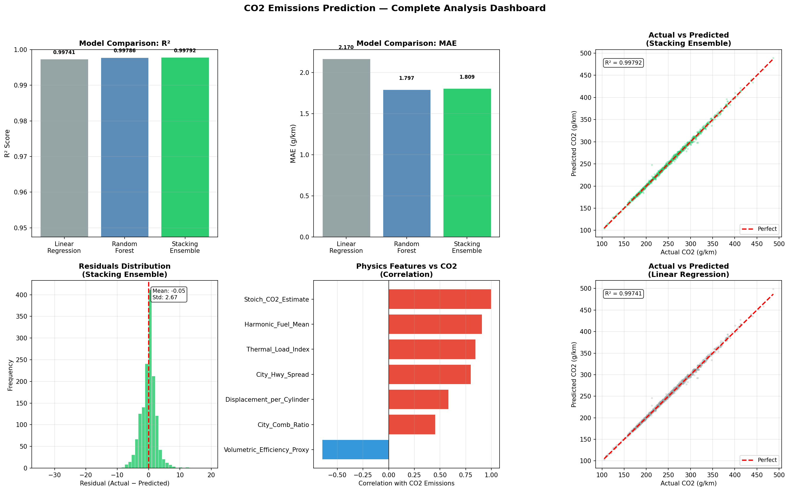
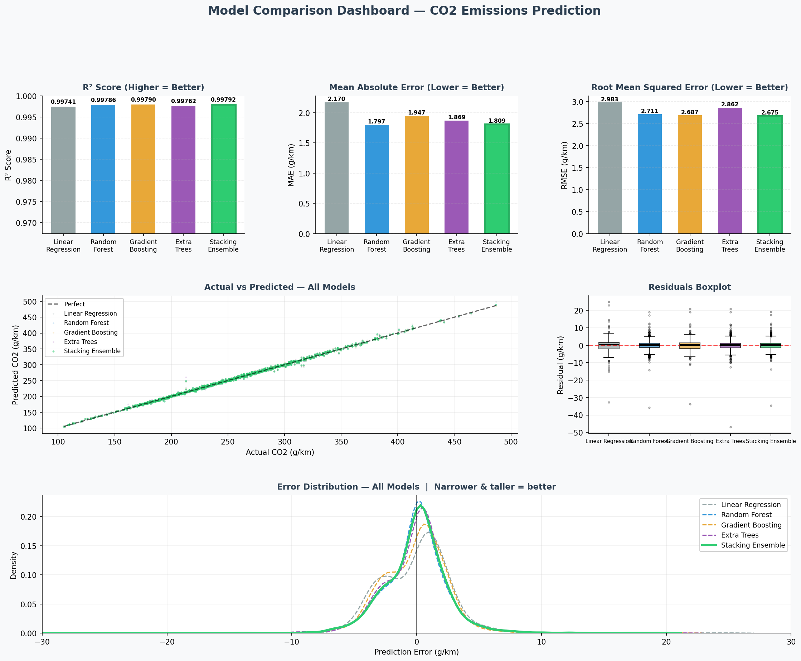
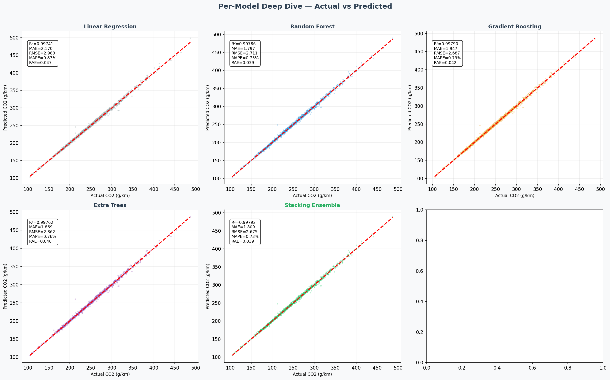
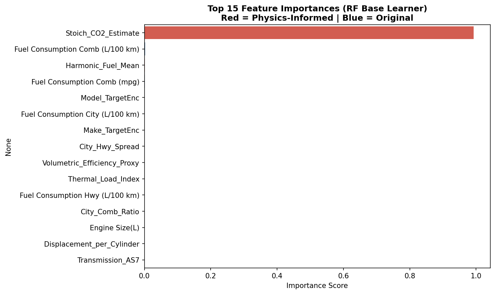
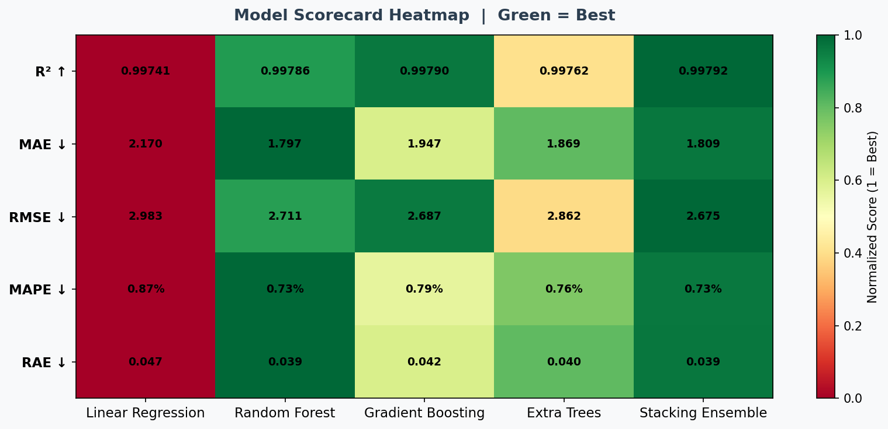
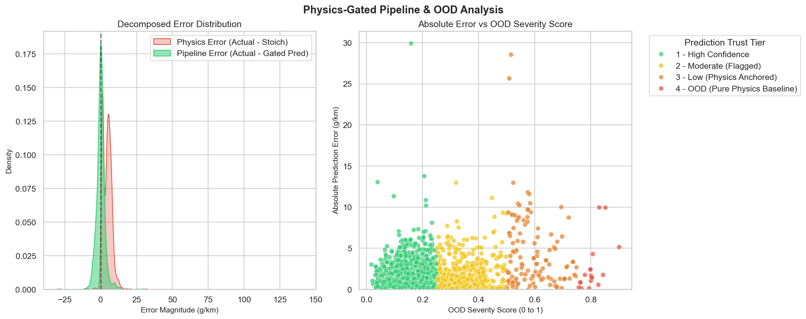

✕
‹
›
Multi-model ML study combining stoichiometric combustion physics with ensemble learning and OOD-gated prediction pipelines for regulatory-grade accuracy.
7 domain-derived features from combustion thermodynamics
80/20 split · 5-fold CV · 60 features · 3 models
| Model | R² | MAE (g/km) | RMSE (g/km) | MAPE | RAE | Rank |
|---|---|---|---|---|---|---|
| Stacking Ensemble RF + GB + ET → ElasticNet |
0.99792 | 1.809 | 2.675 | 0.73% | 0.0389 | 🥇 Best |
| Random Forest | 0.99786 | 1.797 | 2.711 | 0.73% | 0.0386 | 🥈 2nd |
| Linear Regression Baseline |
0.99741 | 2.170 | 2.983 | 0.87% | 0.0466 | 🥉 3rd |
Hover over chart elements for detailed values
Multi-layer OOD detection routes predictions through physics bounds
Click any graph to view full resolution · Use arrow keys to navigate





